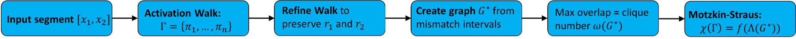

Problem Statement
Folding can be described by looking at how a path moves through activation patterns. Once those patterns are treated as vertices, the path induces a graph-like object.

The contribution is to connect that graph object to a continuous formulation. In the Motzkin-Straus framework, graph structure can be studied through an optimization problem over the simplex:
\[ \max_{x\in\Delta}\sum_{(i,j)\in E}x_i x_j. \]
Discrete graph quantities are often difficult to optimize directly during neural-network training. A continuous objective is compatible with gradient-based optimization.
More generally, an interpretability statistic can become a training signal once it is expressed in a differentiable mathematical form.
BibTeX
@inproceedings{lewandowski2026graph,
title = {A Graph-Theoretical View of Space Folding via the {Motzkin--Straus} Framework},
author = {Lewandowski, Michal and Heinzl, Bernhard and Rainer, Roman and Nessler, Bernhard and Moser, Bernhard A.},
booktitle = {ICLR 2026 Workshop GRaM},
year = {2026},
url = {https://openreview.net/forum?id=3yZQOx8zYk},
note = {Accepted at multiple ICLR 2026 workshops; poster at GRaM}
}